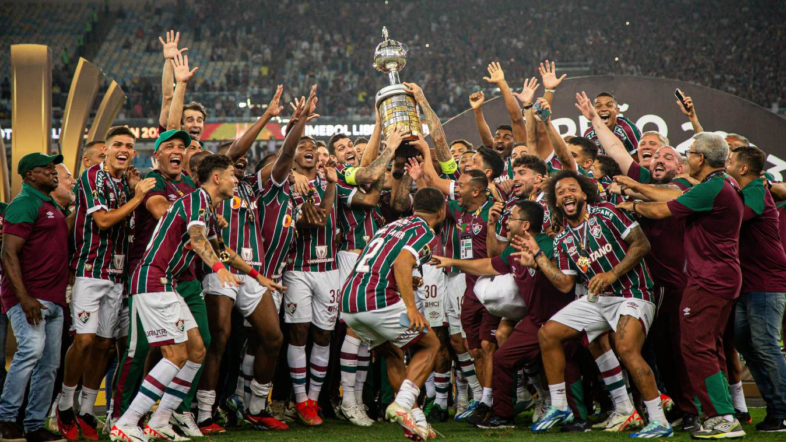

Bem-vindos ao nosso site!

Fluminense Football Club é um clube multidesportivo brasileiro sediado no bairro de Laranjeiras, localizado na Zona Sul da cidade do Rio de Janeiro, capital do estado homônimo. Fundado em 21 de julho de 1902, tem como principal atividade o futebol, mandando suas partidas no Maracanã. Disputa o Campeonato Carioca, a principal liga estadual do Rio de Janeiro, bem como o Campeonato Brasileiro, principal liga do país.
Fundado em 21 de julho de 1902, por Oscar Cox, jovem filho de um cidadão inglês vice-cônsul da Inglaterra no Equador, o Fluminense Football Club levava, à época, as cores cinza e branco. Cox é um dos grandes responsáveis pela chegada do futebol ao Brasil. Em diversas idas à “Terra da Rainha”, sempre trazia novidades, bolas, materiais esportivos. Também jogou, foi campeão Carioca de 1906, quando o Flu já era verde, branco e grená. Com problemas para adquirir o tecido cinza para o uniforme original, em 1904 foi aprovada a alteração, nascendo o Tricolor. Pioneiro, o Fluminense construiu o primeiro estádio de cimento da América Latina, o Estádio de Laranjeiras, que foi sede do Campeonato Sul-Americano de Seleções, atual Copa América, e dos Jogos Olímpicos Latino-Americanos, atualmente Jogos Pan-Americanos, e foi palco do primeiro título relevante da Seleção Brasileira. Considerada o Prêmio Nobel do Esporte, o Fluminense é o único clube da América Latina que detém a Taça Olímpica, em 1949, além de ser o único clube de futebol do mundo ter seu nome inscrito na honraria concedida pelo Comitê Olímpico Internacional por serviços prestados ao esporte. Foi de Preguinho, um dos ídolos tricolores, o primeiro gol da Seleção Brasileira em Copas do Mundo. Desde Cox, muitos craques vestiram a camisa do Fluminense. Além de Preguinho, Pinheiro, Hércules, Escurinho, Waldo, Orlando Pingo de Ouro, Welfare, Ademir de Menezes, Rivellino, Altair, Jair Marinho, Gerson, Marcos Carneiro de Mendonça, Félix, Castilho, Carlos Alberto Torres, PC Caju, Pintinho, Branco, Didi, Ézio, Romerito, Assis, Washington, Renato Gaúcho, Tele Santana, Romário, Deco, Conca, entre outros, fizeram a alegria da torcida tricolor. Campeão da Conmebol Libertadores 2023, campeão da Conmebol Recopa 2023, tetracampeão brasileiro (1970, 1984, 2010 e 2012), campeão da Copa do Brasil (2007), campeão da Copa da Primeira Liga (2016) e 33 vezes campeão Estadual. Além da sede de Laranjeiras e do Maracanã, onde manda seus jogos, o Fluminense possui dois Centros de Treinamentos. O de Xerém, em Duque de Caxias, é voltado para as divisões de base e o Futebol Feminino, e o da Barra da Tijuca, do Futebol Profissional. Um dos quatro grandes clubes do Rio de Janeiro, primeiro entre os doze grandes do futebol brasileiro a entrar em campo e a ostentar a palavra futebol no nome, o Fluminense é o clube que mais disputou campeonatos estaduais no Brasil, presente em todas as edições do Campeonato Carioca de Futebol desde 1906, vencendo em trinta e três ocasiões. Em competições nacionais é um dos times mais bem-sucedidos, com quatro títulos do Campeonato Brasileiro de Futebol, no qual o Fluminense é também o clube do Rio de Janeiro com mais presenças entre os quatro primeiros, e uma Copa do Brasil, tendo participado de três finais.
Nossos serviços
Desenvolvimento de páginas web e sistemas